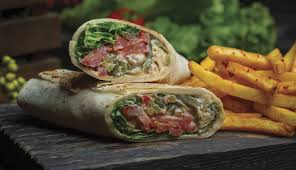

Shawarma: A Flavorful Middle Eastern Treat

Ingredients
- Boneless, skinless chicken breasts or thighs: 1 ½ pounds
- Olive oil: 2 tablespoons
- Lemon juice: ¼ cup
- Garlic cloves: 3, minced
- Ground cumin: 1 teaspoon
- Ground coriander: 1 teaspoon
- Paprika: 1 teaspoon
- Salt: to taste
- Black pepper: to taste
- Pita bread: for serving
- Desired toppings (tahini sauce, hummus, chopped vegetables, etc.)
Instructions (for oven-baked shawarma)
- In a large bowl, combine olive oil, lemon juice, garlic, cumin, coriander, paprika, salt, and pepper. Mix well to create a marinade.
- Cut the chicken into thin strips. Add the chicken strips to the marinade and toss to coat them evenly. Cover the bowl and refrigerate for at least 30 minutes, or preferably overnight for deeper flavor.
**Preheat your oven to 400°F (200°C).**
- Thread the marinated chicken strips onto skewers (metal skewers are recommended for oven baking). If using wooden skewers, soak them in water for at least 30 minutes beforehand to prevent burning.
- Arrange the skewers on a baking sheet lined with parchment paper. Alternatively, transfer the chicken pieces (without skewers) to a baking dish.
- Bake the chicken for 20-25 minutes, or until cooked through and golden brown, flipping the skewers halfway through cooking (if using skewers).
- While the chicken cooks, warm your pita bread according to package instructions or your preferred method (microwave, oven, etc.).
- Assemble your shawarma! Slice the cooked chicken off the skewers (if used) and fill your warmed pita bread with chicken and your desired toppings. Enjoy!
Savor the taste of shawarma - a delicious and customizable street food experience.